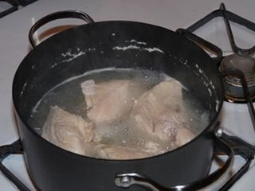
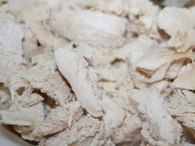
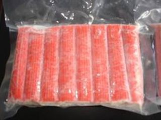
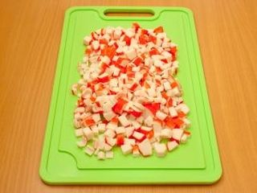
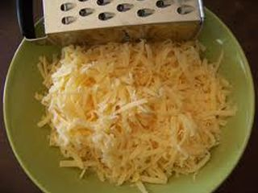
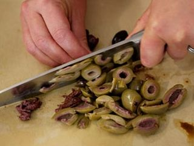
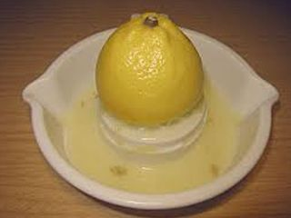
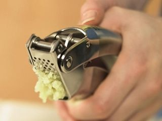
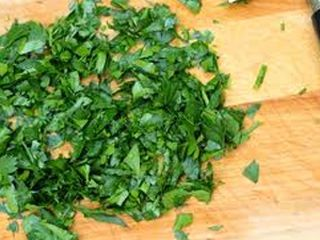
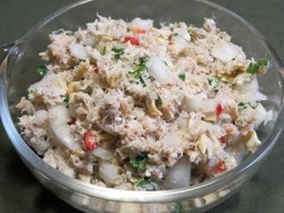

Шаг 1: подготавливаем куриное мясо.

Промываем куриное филе под проточной водой и перекладываем его на разделочную доску. С помощью ножа срезаем хрящи, жир и возможные косточки. Затем выкладываем филе куском в кастрюлю и заливаем холодной водой так, чтобы жидкость полностью покрывала ингредиент. После закипания воды, шумовкой снимаем образовавшуюся от варки мяса пену. Куриный бульон немного солим и хорошо все перемешиваем столовой ложкой. Варим куриное филе в течение 25–35 минут на огне меньше среднего. Затем выключаем конфорку и достаем с помощью вилки куриный ингредиент.

Перекладываем филе на разделочную доску и с помощью ножа нарезаем куриное мясо на небольшие по величине кусочки. Перекладываем измельченное мясо в свободную миску.
Шаг 2: подготавливаем крабовые палочки.

Так как крабовые палочки продаются в супермаркетах в основном в замороженном виде, поэтому перед их обработкой достаем продукт из холодильника и перекладываем его в свободную тарелку. Даем нашему ингредиенту самостоятельно разморозиться до комнатной температуры. Внимание: ни в коем случае не размораживаем морепродукты с помощью микроволновой печи или под струей горячей воды, иначе крабовое мясо может просто потерять свои вкусовые качества и размякнуть. После этого удаляем руками с каждой крабовой палочки защитную полиэтиленовую пленочку и перекладываем компонент на разделочную доску.

С помощью ножа нарезаем палочки вначале вдоль на две–три полоски, а затем поперек на небольшие кусочки и перекладываем их в емкость к измельченному куриному мясу.
Шаг 3: подготавливаем сыр.

Воспользовавшись средней теркой, натираем твердый сыр на стружку и перекладываем в миску с куриным мясом и крабовыми палочками. Внимание: используйте для приготовления салата только твердый сыр.
Шаг 4: подготавливаем оливки.

Приоткрыв не до конца крышку с банки с консервированными оливками, сливаем жидкость в раковину, а плоды выкладываем с помощью столовой ложки на разделочную доску. Воспользовавшись ножом, нарезаем наш ингредиент на кружочки, а затем перекладываем их в емкость к другим измельченным компонентам. Для приготовления нашего салата лучше всего использовать средние по величине плоды оливок и обязательно без косточек.
Шаг 5: подготавливаем сок лимона.

Лимон промываем под проточной водой и перекладываем на разделочную доску. С помощью ножа разрезаем цитрус на две части и, воспользовавшись ручной соковыжималкой, выдавливаем с каждой части ингредиента лимонный сок. Затем с помощью столовой ложки добавляем в емкость к нашим ингредиентам свежеприготовленный сок.
Шаг 6: подготавливаем чеснок.

Перекладываем чесночные зубчики на разделочную доску и, надавив на них рукояткой ножа, снимаем с нашего ингредиента шелуху. Затем с помощью того же острого предмета или чесночницы измельчаем зубчики чеснока и перекладываем в миску ко всем ингредиентам.
Шаг 7: подготавливаем петрушку.

Зелень петрушки промываем под проточной водой. Затем выкладываем наш ингредиент на бумажное полотенце и промокаем его от воды. С помощью ножа мелко измельчаем петрушку и перекладываем в емкость со всеми другими ингредиентами блюда.
Шаг 8: готовим салат сибирский.

Для приготовления нашего сибирского салата осталось добавить в миску ко всем измельченным ингредиентам черные сухарики. С помощью столовой ложки хорошо перемешиваем наши ингредиенты и добавляем в эту же емкость майонез. Еще раз все хорошо перемешиваем до образования однородной массы. Перед тем, как подавать салат на стол, отставляем его в сторону на 30–40 минут для того, чтобы сухарики стали мягкими, а все наши ингредиенты хорошо пропитались майонезом.